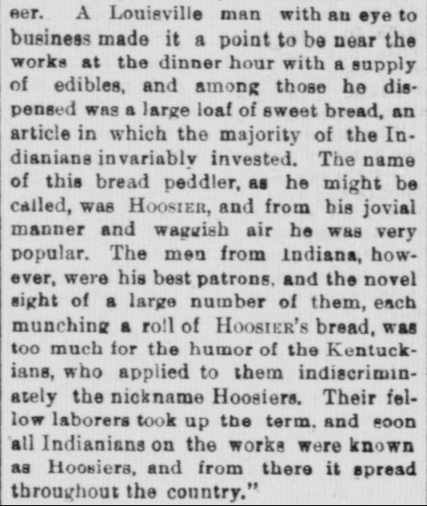
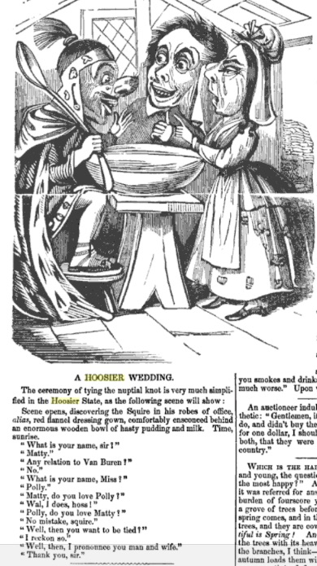
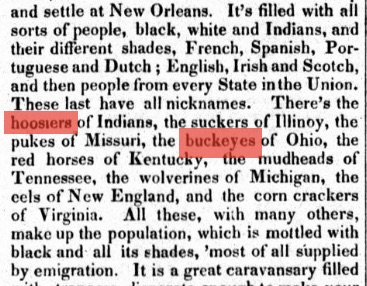
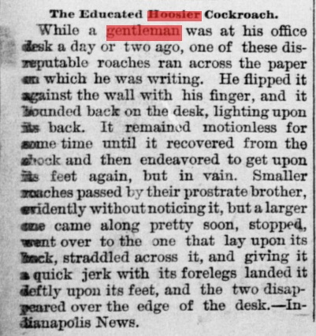
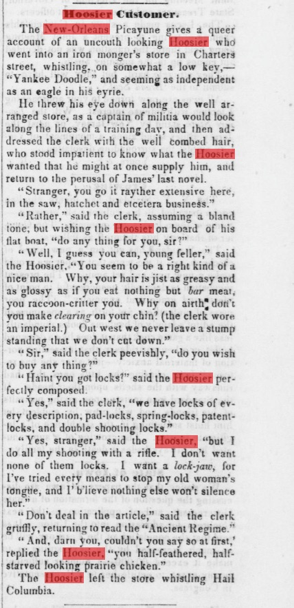
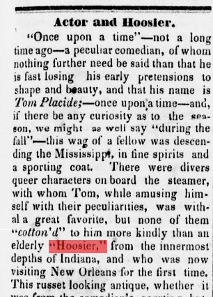
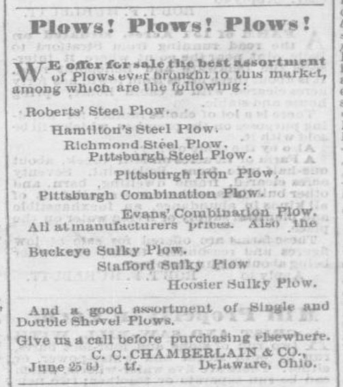
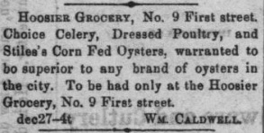
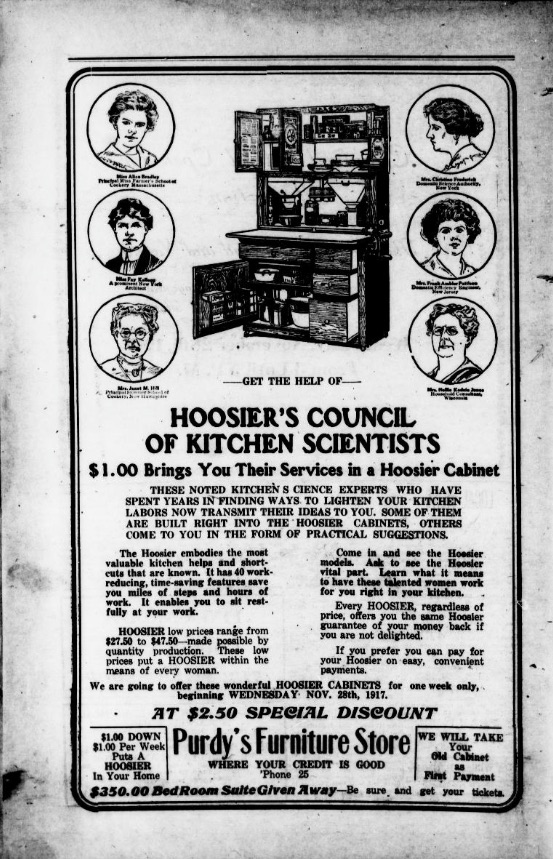

The origin of the word hoosier has been long sought by historians and native Indianans alike. While this research project began as a technology supported hunt for the earliest appearance and original meaning of the word, ultimately the most intriguing discoveries were the variety of meanings hoosier has encompassed through time and by geography. We believe as many before us that the origin of hoosier lies in an oral tradition. Originally published sources such as newspapers, books, literature, and pamphlets likely come well after the word enters the vocabulary of pioneering Americans. Evidence to support this includes a Pittsburgh Statesmen article from 1833 or 1834 that already ponders the origin of the word and proposes one origin theory (Unknown, 1932),
‘Hoosier’-The Hoosier State.- The good citizens of our sister State (Indiana,) have been
called Hoosiers for some time past at home and abroad, sometimes honorably and sometimes
the reverse-as the term has become general it is high time that its origin and definition
should be as generally know[n] before that section of the public lands were regularly
surveyed-many families located and were called squatters-the surveyors on finding on
of those would ask who's here, and place the name on their map-the question became so
familiar, that on the first view of the smoke of a cabin, the exclamation often then
‘who's here’ became equally so until it eventuated in the general term Hoosier.
Other theories of the term's origin include but are not limited to:
The Indiana State sentinel. (Indianapolis [Ind.]), 25 Jan. 1893. Chronicling America: Historic American Newspapers. Lib. of Congress. http://chroniclingamerica.loc.gov/lccn/sn87056600/1893-01-25/ed-1/seq-4/
Diaries, letters, and other personal or business writings from the late 18th and early 19th century are likely better avenues for those seeking an origin story. Certainly digitized, widely accessible and searchable versions of personal narratives from this time period are on the rise but unfortunately for the general public they are too often contained within subscription databases more readily available to university scholars. The joys of paper archive culling are many and for a time will continue to be the mainstay for hoosier origin seekers. For additional origin theories consult the bibliography.
We wanted to leverage freely available databases that include searchable historic full text to look at the frequency in appearance of the word hoosier, when it was being used, where it was being used, who was using it and how, and various cross sections of these characteristics. Examples of such databases include: University of Michigan and Cornell University's Making of America, a full text database of early American books and journals and is ripe with early hoosier references; HathiTrust; Internet Archive; and Google Books. From Google Books, Yankee Notions, or Whittlings of Jonathan's Jack-knife, Volume 1 published in 1852, we see a tidbit that also appears republished in many newspapers of the time but in this monograph it is accompanied with an unflattering image of a hoosier wedding.
In: Yankee Notions, or Whittlings of Jonathan's Jack-knife, Volume 1. T. W. Strong, New York: 1852. Pg. 22 https://books.google.com/books?id=F20AAAAAYAAJ
Ultimately we chose to focus our text analysis on digitized newspapers available through the National Digital Newspaper Program, a partnership between the National Endowment for the Humanities and the Library of Congress. This data is freely available and most importantly the Library of Congress provides API access to the transcript files of the full text. Relying on massive datasets of machine-readable text from newspapers across the United States covering the years 1836-1922, we have new insights on the term hoosier's usage through time and across geographies. Certainly it would be interesting to see what post 1922 news has to tell us about the word, particularly as it is adopted by Indiana University as a college (including sports) mascot, but copyright restricts our dataset to public domain (pre-1923) newspapers.
We suggest that the term's definition, like all language, was and remains in flux. Instead of a tidy trajectory from one meaning to another, this newspaper analysis suggests hoosier has always had a variety of meanings and connotations. It was used to refer to individuals from "the West," which in early 19th century included Indiana, Illinois, Missouri, and parts of Michigan, Wisconsin, and sometimes Kentucky. However, there is also clear and consistent evidence that during the same time period it was just as often a term for referring exclusively to Indianans. The below 1838 Madisonian article details early State affiliated nicknames including Hoosier for resident of Indiana.
The Madisonian. Washington City [i.e. Washington, D.C.]), 20 Oct. 1838. Chronicling America: Historic American Newspapers. Lib. of Congress. http://chroniclingamerica.loc.gov/lccn/sn82015015/1838-10-20/ed-1/seq-1/
The word clouds for 1836-1849 support these dual geographic connections. They include the words west, western, Illinois, Kentucky, buckeye (Ohioan nickname) and sucker (Illini nickname). These nicknames are often invoked in political discussions and the same word clouds reflect political speak with terms like: whig, yankee, and democrat.
The Choropleth map showing the relative frequency in appearance of the term hoosier within Chronicling America reflects both the Indiana and "West" connection with greater percentages of pages containing the term in Indiana, Ohio, and Kentucky newspapers. Equally interesting though are states like Connecticut that do not fall within this historic "West" area and display equally high mentions. Geographical residency status is not the only characteristic in flux in hoosier's early years (1830s-1880s), though certainly the rough frontier landscape, rooted in the geography of the West had a considerable influence on the term's additional common characteristics. Surviving and thriving in the backwoods of the "West's" frontier required gumption, stick-to-it-tiveness, and strength. This existence was also reclusive and by city dweller standards, less refined. Stories that reflect the positive and negative of all these characteristics abound in the newspapers analyzed. In fact many stories at first appear derogatory but upon full reading are actually more praising in nature, describing an uncouth backwoodsman who surprises the writer with strength and hospitality.
Even into the 1890s we see quips that allude to hoosier's bifurcated sentiment. From, "The Educated Hoosier Cockroach," in the Rock Island Daily Argus (Illinois), July 24, 1893, Page 8, originally printed in the Indianapolis News, we see a combination of insult and praise. The antihero Hoosier Cockroach pitted against the office gentleman, proves his brawn, gumption, and brotherly valor, over lesser roaches and the presumptively educated clerk. Only the Hoosier cockroach would prevail in these deleterious circumstances.
Rock Island daily Argus. (Rock Island, Ill.), 24 July 1893. Chronicling America: Historic American Newspapers. Lib. of Congress. http://chroniclingamerica.loc.gov/lccn/sn92053945/1893-07-24/ed-1/seq-8/
"Hoosier Customer," from the Stroudsburg, Pennsylvania's Jeffersonian Republican of November 3, 1841 touches on a variety characteristics that often accompany hoosier mentions. Wrapped up in one story we see evidence of hoosier as it relates to:
Jeffersonian Republican. (Stroudsburg, Pa.), 03 Nov. 1841. Chronicling America: Historic American Newspapers. Lib. of Congress. http://chroniclingamerica.loc.gov/lccn/sn86053954/1841-11-03/ed-1/seq-1/
Indeed these folksie stories appear over and over from 1830s-1880s with the most popular stories being picked up and repeated through the US. Not all hoosier characters are a combination of positive and negative attributes. Many are outright negative with no redeeming qualities suggested. Additional descriptors that regularly grace a hoosier reference include:
Another origin story that is harkened in our newspaper findings is the strong association between the word and boat travel (recall hushing). The Choropleth map reflects a higher number of instances of the word in states that border the Ohio, Missouri, and Mississippi Rivers. Additionally, newspaper stories reference flatboats transporting goods from the West to New Orleans manned by hoosiers, men building the canals in the West are characterized as hoosiers, and steamboat passengers share amusing accounts of encounters with hoosier flatboatmen returning home. One such example from an 1846 Kosciusko Chronicle of Mississippi depicts such and interaction.
 Kosciusko chronicle. (Kosciusko, Miss.), 04 June 1846. Chronicling America: Historic American Newspapers. Lib. of Congress. http://chroniclingamerica.loc.gov/lccn/sn83016940/1846-06-04/ed-1/seq-1/
Stories such as these are less news and more tale-like. Their rootedness in truth is unknown but their proliferation is strong in both newspapers and other fictional literature, plays, and poetry of the time. Poetry regarding hoosier appears in newspapers. The Hoosier Nest by John Finley of Richmond, Indiana in 1833 (or 1834) includes an alternative spelling of hoosier, hoosher. For this research we pulled but have not yet included in our analysis the following spelling variations within the newspaper dataset: hoosier, hoosher, husser, hooshier, hoosheroon, hoosierine, and hoosierland. We did not pull hosier, another alternative spelling, as it resulted in too many instances of hosiery (as in stockings). Another poet, John Whitcomb Riley, 1849-1916, became known as the Hoosier Poet because of his Greenfield, Indiana birthplace and later Indianapolis home but also because of his richly dialectical writing. Original recordings from the Indianapolis Public Library of the poet reading his own poetry including, "Dot leedle boy," and "The bear story that Alex 'ist maked up his-own-se'f" offer a taste of the hoosier dialect that is regularly characterized in the newspapers as baffling, incomprehensible, mutterings.
As suggested earlier it is worth considering that hoosier has always had a variety of connotations. Dunn suggests hoosier began in the South as a negative term and later came to represent the inhabitants of Indiana. The word appears, in part, to follow other epithets that are ultimately embraced by the entity they are intended to describe, epithets that are converted into a cry of ownership, solidarity, and identity. Hillbilly and redneck have experienced similar trajectories. Patrick Huber in his 1992 thesis, Rednecks and Woolhats, Hoosiers and Hillbillies: Working-class Southern Whites, Language and the Definition of Identity, examines the proliferation of epithets for "poor white Southerners" in 1880s and 1890s. Huber explores how these epithets transform over time, "others went so far as to rob certain damaging slurs of much of their psychological impact by readily adopting or reclaiming these imposed epithets and rehabilitating them into badges of identity and pride. Their responses, sometimes expressed collectively as in trade unions and political organizations but more often expressed individually, were acts of empowerment in which Southern white working people proudly asserted themselves as "rednecks," "hillbillies," "wool hats" or even "hoosiers" (11-12).
Another finding that supports this notion of positive claiming of a term is the proliferation with which advertising begins to include hoosier as a proper noun, a product name. We see examples of farm implements employing Hoosier as a type, for example: Hoosier Corn Drill, Hoosier Wheat Drill, and Hoosier Plow. Hoosier appears consistently in Indiana papers as the beginning of a business or store name, such as Hoosier Grocery. The most prolific and indeed the majority of all references to hoosier in our newspaper study was that of the Hoosier Cabinet, a piece of kitchen furniture hailed as a time saving necessity and manufactured by the Hoosier Manufacturing Company in New Castle, Indiana from late 1890s-1930s. Hoosier Cabinet advertisements make up 31.5% of all hoosier references in Chronicling America. The size of word kitchen and cabinet in the word clouds from 1900-1922 visually reinforce this statistic. To connect one's livelihood to a product name and brand assumes that the word garnered widespread positive appeal. Alternatively, or additionally, to what extent did the national embrace of popular products like the Hoosier Cabinet further feed the positive sentiment of hoosier?
Delaware gazette. (Delaware, Ohio), 16 July 1869. Pg 2 Chronicling America: Historic American Newspapers. Lib. of Congress. http://chroniclingamerica.loc.gov/lccn/sn83035595/1869-07-16/ed-1/seq-2/
Evansville daily journal. (Evansville, Ind.), 30 Dec. 1865. Pg 4. Chronicling America: Historic American Newspapers. Lib. of Congress. http://chroniclingamerica.loc.gov/lccn/sn86059181/1865-12-30/ed-1/seq-4/
The evening current. (Carlsbad, N.M.), 26 Nov. 1917. Chronicling America: Historic American Newspapers. Lib. of Congress. http://chroniclingamerica.loc.gov/lccn/sn93061433/1917-11-26/ed-1/seq-4/
For additional reading on the meaning of hoosier start with Indiana University Librarian Jeffrey Graf's, "The Word Hoosier," at http://www.indiana.edu/~librcsd/internet/extra/hoosier.html.
This move towards positivity is supported in a study conducted by researchers with the Dictionary of American Regionalism (DARE) in 1965-1970 and again in 2013-2014. Question HH1 of the early survey asks the geographically dispersed participants to list "Names and nicknames for a rustic or countrified person." 40 of the 2212 respondents offered hoosier or a phrase including hoosier as their response (Cassidy). The 2013-14 DARE study data is limited to Wisconsin respondents only. In this version question HH1 reads, "What are some names and nicknames for a rustic or country person." Though only 25 Wisconsin resident participants responded, hoosier is never offered as an answer. A new question to the 2013-2014 survey, HH2d, asks, "What does it mean to say that someone is a "hoosier"? 8 of the 9 respondents indicate a person from Indiana (Dictionary of American Regional English 2013-14 Survey). A heftier and far more geographically dispersed dataset is necessary to draw any significant conclusions regarding hoosier change between these 20th century decades. The internet only, Urban Dictionary created and updated by general users includes many present day derogatory references to hoosier including this one noted as "Top Definition" as a result of user interaction with the definition (thumbs up or thumbs down), "St. Louis Meaning: white trash of the worst kind. Also used as an adjective to describe anything several notches below your own perceived sophistication. Dates back to a strike that occurred in St. Louis in the 30's. During this strike, scab workers from Indiana were brought in to fill in for strikers. The perjorative [sic] hoosier stems from the St. Louis workers' lack of appreciation for this."
Our next step is to conduct sentiment analysis on hoosier as represented within each newspaper reference. Sentiment analysis uses statistical analysis and/or machine learning methods to examine the subjective feelings, attitudes, emotions, and opinions, represented in a text. It is often binary, for example positive vs. negative. While machine learning quickens the mass text review, human intervention is essential in sentiment analysis. As demonstrated in the findings discussion above a binary analysis may be a challenge with the term hoosier as a single reference often encompassing both positive and negative qualities. Hoosier (capitalized) vs. hoosier (lower case) vs. "hoosier" (in quotes) is another avenue to examine. We've seen Hoosier as a proper noun suggesting a move towards identity claiming and "hoosier" (in quotes) expressing use as a not yet solidified in the language, slang descriptor. A more fruitful analysis may be one of examining particular qualities, similar to those listed in our Hoosier Customer story analysis. What hoosier qualities appear most often together (ex. backwoodsman and flatboat), what time period or geography are each quality or combination of qualities most prominent (ex. Connecticut and Hoosier Cabinet)? Is there a nuanced shift away from more negative references over time? Does geography play a role in sentimentality as suggested by early origin seekers such as Dunn? While the true origin story of hoosier likely eludes the published texts like newspapers, a historiography of hoosier origin stories would be possible and interesting. The dataset is ripe for questioning and no doubt each question will turn up another.
Stalking the Elusive Hoosier's Nest.Traces of Indiana and Midwestern History 11, no. 3 (Summer 1999): 4–13.
Hoosier.Urban Dictionary. Accessed June 13, 2016. http://www.urbandictionary.com/define.php?term=Hoosier